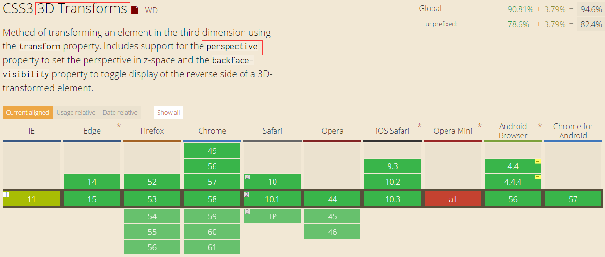

CSS3-transform+perspective
-
关键词
transform 变换 （transform-origin transform-style rotate skew） animation 动画 perspective 透视 （perspective-origin）
-
浏览器支持
先来了解一下目前浏览器对特性的支持情况，用两张图来说明  几乎所有的主流浏览器都有良好的支持。 -
transform 相关特性以及rotate和skew中的deg区别
-
transform-origin: 10px 10px; 变换基点
共两个参数，表示相对左上角原点的距离，单位px，第一个参数表示相对左上角原点水平方向的距离，第二个参数表示相对左上角原点垂直方向的距离。
-
transform: rotate(30deg); 旋转角度
正数顺时针旋转，有多少度旋转多少度。环绕某个轴旋转：rotateX()、rotateY()、rotateZ()。
-
transform: skew(60deg, 60deg); 倾斜角度
元素的倾斜。水平方向的倾斜角度，垂直方向的倾斜角度，第二个参数可选。角度的倾斜方向跟rotate相反，有多少度倾斜多少度。
水平倾斜正角度：元素的左上角向x轴负值方向倾斜；垂直倾斜正角度：元素的左上角向y轴正值方向倾斜。
-
transform: translate(10px, 10px); 平移
一个参数时：表示水平方向的移动距离；两个参数时：第一个参数表示水平方向的移动距离，第二个参数表示垂直方向的移动距离。
-
transform-origin: 10px 10px; 变换基点
-
认识 perspective
perspective（中文意思是透视） 需要将其设置在父元素上。如果设置在子元素上，则不能实现3D的效果，子元素只是宽度上发生改变。值表示眼睛距离物体的距离，距离不同，看见的效果就不一样，越靠近物体，看到的物体会越大，距离越远，物体越小，立体感也就出来了。
-
给父元素这个画布上设置
perspective: 1000px; perspective-origin: 50% 50%;
上面我们了解了perspective，而加上了这个origin是什么，我们前面说的这个是眼睛离物体的距离，而这个就是眼睛的视线，我们的视点的不同位置就决定了我们看到的不同景象，默认是中心，为perspectice-origin: 50% 50%,第一个数值是 3D 元素所基于的 X 轴，第二个定义在 y 轴上的位置。< 资料中说“当为元素定义 perspective-origin 属性时，其子元素会获得透视效果，而不是元素本身。” >经实验，写在子元素上也会获得透视效果。 -
transform-style
< 资料中说“transform-style默认是flat，如果你要在元素上实现3D效果的话，就必须用上transform-style: preserve-3d,否则就只是平面的变换，而不是3D的变换” >
- 下图中，在子元素上设置 perspective: 1000px; 元素宽度发生变化，但是没有3D效果
-
给父元素这个画布上设置
-
perspective 实例1-走马灯效果
-
重叠6个一样大的元素
position: absolute; width: 200px; height: 200px; background-color: #0892e9; // 不一样的背景颜色区分
-
环绕Y轴依次旋转每个元素到指定角度
transform: rotateY(0deg); transform: rotateY(60deg); ... transform: rotateY(300deg);
-
分散开每个元素，形成正六边形
tan30度 = 3分之根号3 = 对边除以斜对边 根号3 约等于 1.732
在元素环绕Y轴旋转时，元素对应的x轴和z轴也在跟着旋转，所以在z轴上平移每个元素就能将他们都分散开了。每个元素设置： translateZ(173.2px) -
让六边形旋转起来，实现走马灯动画效果
transform-style: preserve-3d; /* 让整个六边形3D旋转 */ animation: sixSideTransition 6s; /* 整个动画执行6s */ animation-fill-mode: forwards; /*保持住动画的最后一个状态 */ @keyframes sixSideTransition { ...
-
重叠6个一样大的元素
-
perspective 实例2-正方体组装
- 先平移，再旋转
- 跟上一个状态连续起来制作成动画
-
perspective 实例3-正方体旋转
- 整个piece-box已经有了走马灯旋转的动画，不能再加其他动画
- 再包裹一层div
-
最终效果
https://codepen.io/y_y/pen/rmYPoE -
参考资料